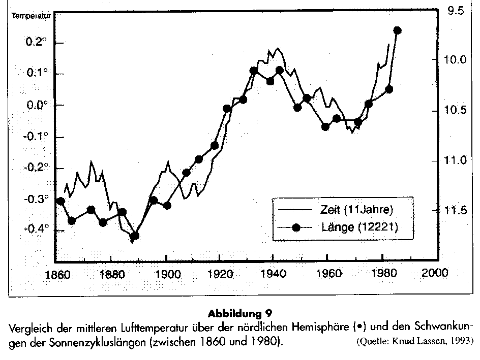

"Zum Fegfeuer" Der etwas andere Klosterladen
"Zum Fegfeuer" Der etwas andere Klosterladen

Bevor wir mit der Kritik anfangen, erst mal ein paar gute Worte zur ökologisch sinnvollen Solartechnik vorab:
Selbstverständlich hat der Solarstrom und die Solarstromgewinnung wie alle Dinge zwei Seiten - eine Licht- und eine Schattenseite. Erst mal die sonnige Seite der Medaille: Daß man mit Solarzellen im Outdoorbereich bzw. dort, wo es absolut keine Steckdose für das Handy, iPhone, PDA, das Laptop, den Akku-Rasierer, MP3-Player (iPod), Radioapparat, Navigationsgeräte, Videokamera und Digitalkamera / Digital-Fotoapparat und Taschenrechner für das Trekking oder sonstwie auf Reisen zur Verfügung hat, sind mobile Solarmodule bzw. ein mobiles Solar-Ladegerät mit Solar-Akku das Mittel der Wahl und sozusagen lebenswichtig, teils auch überlebenswichtig.Und jetzt zur provozierenden Kritik: Wetter und Klima, wer mißbraucht eigentlich die Naturphänomene für unnatürliche Dämmstoffumsätze für Innen- und Außendämmung von Gebäuden, für sinnlose Ökoenergien und gnadenlose Ökoabzocke des Staates? Fragen über Fragen. Sorgloser kann man den Begriff "Wahrheit" wohl kaum noch überhöhen:
Schwarzwälder Bote (gem. Pressenotiz im Obermain-Tagblatt 28.12.99) zum Orkan um Weihnachten 99:
"Bisher traten bei uns Orkane nur über den Meeren auf. Nun haben Sie den Kontinent im Griff. Die Prognosen der Forscher bewahrheiten sich: Unser sorgloser Umgang mit der Erde bringt häufigere und heftigere Klimaschwankungen als bisher. Diese Prognosen lassen sich nicht länger als Kassandra-Rufe abtun."
Ist denn die in den 80ern waldniederlegende "Wiebke" schon vergessen? Nach der so qualvollen Ablösung vom Tod, Höllen- und Fegefeuerschreckgespenst muß heute also die Klimaapokalyptik herhalten, um die Schafsherde (mit treibstoffpreisexplodierender Ökosteuer usw.) zu scheren. Wissenschaftliche Klimasimulation - Hof-Astrologie / Theologie heute? Vergeblich hofften wir, daß dank Bushs vorgeblicher Abkehr vom Öko-Irrglauben auch die Wahrheitsblockade unserer Medienlandschaft aufbrechen könnte:
FAZ vom 06.04.01, S.2 :
"Europas Klimapolitik beruht auf Ideologie
Auch deutsche Wissenschaftler zweifeln an Ergebnissen des Internationalen Rates für Klimaveränderungen"
von H. Rademacher
Den Text können wir uns sparen, Wiederholungen des hier Gesagten braucht es nicht, genutzt hat es auch nix.
Wieso schwankt die Temperaturentwicklung der Außenluft?
Die Sonne, nicht der "allmächtige" Mensch steuert die Temperaturentwicklung der Erdatmosphäre (nicht zu verwechseln mit der Temperatur der Erdoberfläche, die von innen (heißer Erdkern) nach außen abnimmt). Und die Atmosphärentemperatur steigt maßgeblich durch den Kontakt der Luft mit der von der Sonne angestrahlten Erdoberfläche. Wenn es wolkig ist, wird es deshalb kühler - und trotz aller Temperaturstrahlungsabsorption der Wolke eben nicht treibhausmäßig wärmer. Wer uns etwas anderes beibringen will, erzählt nicht die Wahrheit. Es sind Kindermärchen, mit denen uns die staatlichen Ökoterroristen einlullen. Das Licht eines Kerzchens würde genügen, um die Ökoangst zu vertreiben, den Ökowahn aufzuklären. Doch niemand zündet das Licht an, die so arg wohlmeinenden Klimaschützer freuen sich lieber am unterbelichteten Staatsvolk.Warum? Um das kommende Klimaschutzgesetz, inkl. steuerlich bzw. abschreibungstechnisch induziertem Dämmzwang, inkl. gesetzlichem "Ökoenergiezwang" usw., will sagen die staatsfinanzeninduzierte Totalbereicherung der Ökolobbyisten - besser "Ökoparasiten" widerstandslos durchzusetzen. Ja, das sind die Wohltaten, weswegen wir den Abschaum unserer Dämmokratur gewählt haben. Und hieß es früher: "Nur die allerdümmsten Kälber wählen ihren Metzger selber", heiß es nun: Nur zu, allerdümmster Atomhysteriker! Selber gibst Du hier Dein Fell her.
Den eindeutigen Zusammenhang der Atmosphärentemperatur mit der Sonnenaktivität (und nicht vom natürlichen bzw. angeblich menschengemachten CO2-Gehalt) zeigt diese Grafik:

Die "Hohenpeißenberg-" und die "Sonnenzyklus-"Grafiken sind entnommen dem lesenswerten und auch
heute noch aktuellen Aufsatz von Dr. Helmut Böttiger: "Mit kühlem Kopf gegen die Klimahysterie", der als Nachdruck
aus der Zeitschrift FUSION 1/95
Fundierte Kritik - rotgruen.de. Interessant auch für
Altkommunisten! Und hier etwas zum allgemeinen wirtschaftlichen Umfeld - was die Spatzen von den
Dächern pfeifen und keiner zu sagen wagt: Die Spatzseite
Klimawandel?
Leider übertreffen manche beamteten Politiker selbst die schlimmsten Vorurteile. Ein Synergie-Effekt? Urteilen Sie selbst:
Obermain-Tagblatt 28.12.1999
"Lawinengefahr nach Orkan
Hochwasser an der Mosel - "Wir sind bereits im Klimawandel"
[...] Die von Menschen verursachte Veränderung des Weltklimas ist nach Ansicht des Direktors der UN-Umweltbehörde Unep, Klaus Töpfer (CDU), nicht mehr abzuwenden. "Wir sind bereits im Klimawandel", sagte Töpfer. Ein Indiz dafür sei, dass die extremen Wettersituationen dramatisch zugenommen hätten, darunter "Hurrikane, Taifune, gewaltige Niederschläge wie jetzt in Venezuela und der Orkan vom Sonntag in Frankreich und Süddeutschland", sagte Töpfer."
Das Volk und das Wetter kennt so ein Fachmann offenbar nur vom Fernsehen. Sonst wüßte er, daß es im Winter manchmal mehr oder weniger stürmt und schneit. Und zwar schon immer. Da hätten wir Denkmalpfleger jahrhundertealte Hochwassermarken an Main und Mosel, an Regen und Inn, an Rhein und Donau vorzuweisen, die unsere Zeit recht gemütlich erscheinen lassen. Aber das ist halt nicht "extrem dramatisch menschenverursacht" genug. Welches Wort reimt sich übrigens auf Unep? Depp? Nepp? Sepp? oder was?
Das Getöpfer wird noch schlimmer: Obermain-Tagblatt 15.7.02
"Töpfer: Stürme durch Klima-Erwärmung
HAMBURG. Nach den Unwettern in Deutschland sprach sich ... Klaus Töpfer zum Schutz des Klimas für einen radikalen Wandel in der Energieversorgung aus. Niemand könne heute noch einen Zusammenhang zwischen dem Klimawandel und vermehrt auftretenden Stürmen leugnen, sagte der frühere Bundesumweltminister. ... Es gelte einen nachhaltigen Kampf gegen die Treibhausgase zu führen. Kohlendioxid sei der Klimakiller Nummer eins, sagte Töpfer. Deshalb müsse man in der Energieversorgung radikal umsteuern, die Verbrennung von Kohle, Gas und Erdöl drosseln."
aber:
1. Was "man" uns wieder mal zu leugnen verbietet, leugnen
wir als aufgeklärte Bayern (s. Wetteraufzeichungen
im bayer. Hohenpeißenberg) schon aus Prinzip (solange kein StGB dagegenspricht)!
2. Wer Kohlendioxid als Klimakiller bezeichnet, weiß entweder
a) nicht (PISA läßt grüßen, selbst bei Senilen), daß CO2-Gas
Wärmestrahlung überhaupt nicht reflektieren kann, als Reflektorschicht nie nachgewiesen wurde,
obendrein doppelt so schwer wie Luft ist und deswegen nur am Boden herum(f)liegt und dort die Pflanzendecke ernährt - Klima also nicht killen
kann, oder
b) lügt vorsätzlich, um gräßliche Politikkonzepte durchzusetzen.
Ist a) oder gar b) bei "unseren" Experten ausgeschlossen?
3. Gegen kämpferische Radikalinskis haben wir nicht erst seit SA-marschiert was.
4. Wer Kohle, Gas und Erdöl erdrosseln will, setzt der auf Wind+Solar,
womit wir niemals eine sinnvolle Energieversorgung absichern können,
oder ist das gar der erste Schritt in eine sinnvolle Weiterentwicklung
sicherer Kernkraft? Bei Politikern weiß man ja nie, woher gerade der schwarze Koffer weht...
Bild am Sonntag - Sonderausgabe Dezember 1999
"Verschwinden Sommer und Winter?
Im Winter blühen die Kirschbäume, zu Weihnachten gibt´s Regen statt Schnee, und im Sommer überraschen uns Gewitter, die wir bislang nur vom Herbst kannten - der Laie staunt, den Meteorologen wundert es nicht mehr:
"Jahreszeiten werden sich verschieben und vermischen", prophezeit Dr. Manfred Stock vom Potsdam-Institut für Klimaforschung. "Frühling und Sommer treten früher ein, die Winter werden wärmer und bringen weniger Schnee." Grund für das Klima-Chaos ist die Erderwärmung - zu 95% ausgelöst vom Menschen: Durch die riesigen Mengen Kohlendioxid (CO2), die durch das Verbrennen von Kohle, Öl oder Gas in die Atmosphäre gelangen, kommt es zum "Treibhauseffekt", zur Aufheizung des Klimas.
Furchtbare Folge: Gletscher und Eisberge schmelzen, ganze Landstriche werden für immer verschwinden. Gibt es Rettungsmöglichkeiten? Ernüchterndes Fazit der Wissenschaftler: "Klima kann man nicht reparieren."
Furchtbar, furchtbar. Bild sprach wieder einmal mit dem Toten. Aber warum dann diese Kampagne zugunsten Dämmstoffverpackung unserer Häuser und Öko-Steuer? Nun, die subventionsgeilen Klimasimulanten überlegen es sich schnell anders, jetzt soll das Klima doch noch repariert werden:
Obermain-Tagblatt 28.6.00
"Forscher: Winter wird wärmer und feuchter
Potsdam. Angesichts des Treibhauseffekts bleiben der Menschheit nach Aussagen des renommierten Umweltforschers Prof. Hans-Joachim Schellnhuber zwei Strategien. Sie müsse auf alternative Energien umsatteln, damit die Temperaturen nicht rasant ansteigen,
[Kommentar KF: Damit kann nur Atomenergie gemeint sein. Alle anderen "Alternativen" verbrauchen viel zu viel Energie im Verhältnis zu ihrem energetischen Ertrag. Denn nur dort ist durch die hohe Energiedichte des Energieträgers der Energiegewinn maximal.
Im Verhältnis zum Energieertrag verbraucht eine Photovoltaik-Anlage fast das Hundertfache an Kupfer und das Zwanzigfache an sonstigen Baumaterialien. Trotz des hohen Transportaufkommens für ihre Brennstoffe haben herkömmliche Kraftwerke kaum höhere Stoffströme pro erzeugter Energie als Solarkraftwerke. Das berühmte Solarkraftwerk in der Wüste Kaliforniens erzeugt nicht einmal die notwendige Energie zum Nachführen der Solarzellenspiegel an den Sonnenstand. Nur bei Atom- und Wasserkraftwerken fallen die Stoffströme um ein bis zwei Größenordnungen niedriger als bei Solarkraftwerken aus.
Und die Windkraft? Sie kann mangels Zuverlässigkeit keine konventionellen Energieträger ersetzen. Und nur durch übelste Abschreibungs- und Subventionstricks rechnet sich ihre Investition. Nicht aber ihr Energieertrag! Der ganze Unsinn der sog. Alternativen Energie ist in der im Auftrag der Schweizer Regierung erstellten aktuellen Vergleichsstudie des Paul-Scherrer-Instituts in Villingen (PSI) in Zusammenarbeit mit der ETH Zürich nachzulesen.]
und sich zugleich an einen leichten Klimawandel anpassen. "Wenn wir jetzt die Energien um nur einen Prozentpunkt pro Jahr auf alternative Nutzung umstellen, werden wir das Klima in einem akzeptablen Bereich halten", sagte der Direktor des Potsdam-Instituts für Klimafolgenforschung.
[Kommentar KF: Daß der Klimatologe an den Treibhauseffekt durch Gashüllen glaubt, ist schwer nachzuvollziehen. Mit Horrormeldungen kann vielleicht die politische Unterstützung seines Instituts verbessern, im Klartext mehr Kohle rüberwachsen lassen. Daß er sich kompetent zu Energiefragen äußern könnte, ist seiner diesbezüglichen Ausbildung nicht abzulesen.
Wie sagte doch der gutinformierte amerikanische Nobelpreisträger der Chemie Kary Mullis dem Magazin der SZ (23.6.00):
"Wenn 99 Prozent aller Wissenschaftler einer Meinung sind, ist sie mit großer Wahrscheinlichkeit falsch. ...
SZ: Krankt die moderne Wissenschaft an zu vielen
Expertenmeinungen?
Mullis: An zu vielen selbst ernannten Experten. Im Internet
gibt es noch viel schlimmere Fälle von Desinformation als die über
(angeblich gefährliche) Spinnen(bisse): etwa zur so genannten
globalen Erwärmung. Bei der Flut von Webseiten zu diesem Thema muss man
sich fragen: Wer stellt welche Informationen aus welchem Grund zur
Verfügung? Dabei kann man deutlich zwei Gruppen unterscheiden. Die meisten
vertreten das Konzept, wir Menschen seien für die Aufheizung der
Atmosphäre verantwortlich. Diese Leute erhalten ihre Forschungsgelder in der Regel
von staatlichen Organisationen. Nur eine kleine Minderheit hält es
für völligen Blödsinn, dass der Mensch für die globale
Erwärmung allein verantwortlich sei. Dazu gehöre ich. Wir sagen:
Hey, sind vor 15.000 Jahren die Gletscher geschmolzen, weil die Leute zu
viele Lagerfeuer angezündet haben? Nein, und auch die nächste
Eiszeit werden nicht wir Menschen verursachen. Da sind mächtigere
Kräfte im Spiel. Aber wer würde eine solche Meinung finanzieren?
SZ: Vielleicht die Autoindustrie. Der Nobelpreisträger
Mario Molina vom Massachusetts Institute of Technology, der das Ozonloch erforscht hat, jedenfalls nicht.
Mullis: Molina ist ein Krankenpfleger, kein Wissenschaftler.
Ich traf ihn einmal auf einer kleinen Cocktailparty, die in den USA jedes
Jahr für Nobelpreisträger gegeben wird. Davor hatte ich sogar
sein fürchterlich langweiliges Buch durchgearbeitet, um ihn zu fragen:
Was kapiere ich da nicht? Das UV-Licht der Sonne trifft auf die Sauerstoffmoleküle
unserer Atmosphäre; dabei entsteht Ozon, das ein Schutzschild aufbaut,
das die für uns schädliche UV-Strahlung von der Erde fernhält.
Würde diese Ozonschicht aus irgendeinem Grund dünner, müsste
mehr UV-Licht durchdringen, auf darunter liegende Sauerstoffmoleküle
treffen und wiederum Ozon bilden - ein Ozongleichgewicht also. Wie kann
da ein Loch entstehen? Ist etwa plötzlich der ganze Sauerstoff von der Erde verschwunden?
SZ: Was hat Molina geantwortet?
Mullis: Es sei viel komplizierter. Und als ich sagte:
"Erkläre mir das, ich bin doch nicht blöd, wo liegt das
Problem? Wenn das Sonnenlicht auf einen von Sauerstoff umgebenen Planeten
scheint, wird es in einer gewissen Höhe immer eine Ozonschicht bilden,
die genügend dicht ist, um den Boden vor UV-Licht zu schützen.
Außer es gibt keinen Sauerstoff mehr", da antwortete er nur:
"Das verstehst du nicht", und lief weg. Molina hat nicht einmal
gefragt, wie ich zu meinem Einwand komme. Er wollte mir anscheinend
deutlich machen, dass ich das Problem bin. Er hat seine Chance genutzt,
Forschungsgelder einzustreichen. Die ganze Welt ist auf ihn hereingefallen. ..."
so wie die Meinungspresse auf den grünen Schellnober. - Lesen Sie hier weitere Aufklärung zum Ausbeuten des natürlichen Ozonlochs: Das Märchen vom "Ozonloch" als Auftakt der "menschengemachten Erderwärmung"]
Er rechnet mit einem Temperaturanstieg von zwei bis 2,5 Grad in 100 Jahren. "In Deutschland werden die Winter wärmer und feuchter, die Sommer vor allem in Ostdeutschland trockener." Die Landwirtschaft müsse sich umstellen: "Wir könnten neue Getreidesorten anpflanzen und der Weinbau wird einen Aufschwung nehmen."
[Kommentar KF: Na und? Im Mittelalter konnte sogar England und Norwegen respektable Weine anbauen. Nordamerika galt den Wikingern als Vinland. Hat da jemand zu viel Suppe gekocht? Und deswegen sollen wir diese fürchterlichen Windrotoren über uns pfeifen lassen?]
In heißen Ländern dagegen sei die Landwirtschaft schon an der Grenze. Afrika, Süd-Ost-Asien und Westindien können nicht einfach zu anderen Pflanzen übergehen. Große Jahrhundertdürren wie dieses Jahr in Westindien werden sich häufen."
[Kommentar KF: Und das kommt ganz sicher von der vielen heißen Luft, die solche Wissenschaftler in die Welt blasen. Das vermag wirklich nur noch Politiker zu überzeugen.]
Mit Konferenzen von Rio über Kyoto zu Nairobi und Kopenhagen haben die Klimaangstgewinnler alles versucht und versuchen weiter alles, die Weltmeinung - und auch die Völker der Welt zu beherrschen. Doch Präsident Bush machte den Ökoschwindel nicht so mit, wie es sich die Ökofreunde wünschten: "steigt aus aus Kyoto-Verpflichtungen" (Obermain-Tagblatt 29.3.01) und "dreht die Uhr beim Klimaschutz zurück" (Handelsblatt 27.3.01). Das grauste die auserwählte Internationale der "Demokraten". Ihre neue Schröpfkur für uns droht zu scheitern. Drohte nun vorsichtshalber ein neues Dallas? Mr. President, watch your step! Doch schon ist er weg und ein neuer kommt. Von den Al Goristen heftigst unterstützt. Und was macht Baracken-Obama? Mit! God bless America.
Die eine und die andere Seite
Es gibt ja immer eine andere Seite - und gerade im Internet noch freie wissenschaftliche Diskussion. Wer davor, und vor künftigen Meinungsverbrechen noch keine Angst hat, sollte mal die nachfolgenden Links probieren:
Kritik
an der Treibhauseffekt-Theorie - Zusammenstellung
wichtiger deutschsprachiger Aufsätze/Stellungnahmen (u.a. von Dipl.-Met.
Dr. Wolfgang Thüne, Umweltministerium Rheinland-Pfalz und Prof. Dr.
Gerd Gerlich, Institut für mathematische Physik der TU Braunschweig)
und Links der medizin.freepage.de:
news
Der
Treibhaus-Schwindel Treibhaus-Schwindel.de
Ist der Treibhauseffekt wirklich auf menschlichen Einfluß
zurückzuführen? Zweifel sind angebracht - von Dirk
Maxeiner, Coautor von "Lexikon der Öko-Irrtümer", Eichborn 1998
www.dsri.dk/~hsv/
www.hschickor.de/ozon/index.html
Global Warming - Treibhaus main
Der CO2 u. Ozonschwindel zum Abzocken der Buerger - Alles Lüge!
Lehrer-freepage.de:
Der Klima Flop - stabiles Klima mit leichter Temperaturerhoehung auf Grund verstärkter solarer Einstrahlung
Umweltthemen von
konservativ.de - was Sie woanders nicht lesen dürfen.
ESEF - European Science and Environment
Forum, das wissenschaftliche Forum zur Umweltpolitik (english)
The Science & Environmental
Policy Project - Topaktuelle Info rund um die Klimadebatte (english)
Böttiger Verlag - Skeptische
Informationen zur Klima-, Energie- und Umweltpolitik
Dr. Helmut Böttiger: "Rette die Erde und
bringe dich um" - Zur Geschichte der Klimaapokalyptik
Dr. Helmut Böttiger: Politik der Kernenergie - Wahn und Wahrheit rund um die Atomkraft -
und wie man Strahlungsabfall
durch Transmutation unschädlich macht -
Dr. Helmut Böttiger: Kernenergie,
Gesellschaft, Umweltschutz
Kernenergie-Wissen.de-
Wissen, das uns oft vorenthalten wird und man trotzdem brauchen könnte
TIPP für Atomfeinde: Nucleostop
- wie Sie Atomstrom nicht in Ihr Ökohausstromnetz reinlassen und zurücksenden ;-))
Energie-Fakten.de- Wissen, das man als Ökojünger gar nicht wissen will
Kernenergie-Lexikon
Neues, Interessantes
und Kurioses aus der Welt der Energie - wer lacht schon gerne?
Die neuen 68er - progressiver Umweltschutz - nanu?
Bürger für Technik - sowas gibt´s!
Regenerative Energieerzeugung - Der Weg aus dem Energienotstand?
Subventionierter Wahnsinn - Alternative Energien in der Schweiz
Harrys Resources - Unterhaltsame
und kontroverse Nachrichten und Stellungnahmen zu Umwelt und Geschäftemacherei.
Krahmers Seiten -
Rund um die Klimadebatte und den Wissenschaftsbetrug - Die TOP-Adresse
für Neugierige. Die Klimadebatte aus der Sicht Pro und Contra,
Linksammlung in die Welt der Klimatiker. Für jeden Laien zum Einstieg bestens geeignet.
Krahmers multimedia physik
- die beste Physik-Page in Deutschland und weit darüber hinaus
Peter Knechtlis Homepage
- Eine interessante und unabhängige Informationsquelle aus der Schweiz zu Wirtschaft und Ökologie
Raum und Zeit - Zeitschrift
mit freier Debatte rund um Wirtschaft, Gesundheitswesen, Ökologie, Wissenschaft und Kultur
konservativ.de - Gut
sortierte Informationsquelle, die auch kontroverse Standpunkte bietet
Rotgruen.de - Frech recherchierte Kritik an aktuellen Fehlentwicklungen
Auf Hinweis von P. Dietze:
Dr. Vincent Gray in Climate Research Vol 10/2 1998 (pdf-File) "The
IPCC future projections: are they plausible?"
John Daly: Still Waiting For Greenhouse
American Meteorological Society Homepage
Dr. phil. Dipl.-Met. Wolfgang Thüne, Fachaufsätze und
Stellungnahmen zur Klimafrage:
Nein zur Ökodiktatur
Kohlendioxid kein Klimakiller
Thünes Einsprüche
(siehe hierzu auch den Schockbeitrag zum EU-Grünbuch
und CO2-Zertifikathandel von Wildgruber: http://www.konservativ.de/umwelt/wildgrue.htm)
und Klimaschwindel brutal
Daß es in Wahrheit keinen Treibhauseffekt geben kann, wissen alle Fachleute und zuständigen Beamten und Politiker. Schreiben (3.3.1997, 2003) und Aussagen (Mai 1997) aus dem Bundesministerium für Bildung, Wissenschaft, Forschung und Technologie belegen, daß dort niemand mehr an den Treibhauseffekt glaubt. Gleichwohl werden marktverzerrende Subventionsmaßnahmen und bürgerbedrohende Verordnungen mit entwickelt und unter der Lüge "Vorsorgepolitik" dem doofen Michel aufgezwungen. Als soziologisches Problem wird erkannt:
"Das Auftreten ganzer Wissenschaftlergruppen, die unter dem Deckmantel angeblicher Objektivität und Sorge Schreckensszenarien [zur Globalerwärmung] entwerfen, die durch bereitwillige Medien in politischen Druck verwandelt werden, was dann zu Aufträgen für die verantwortlichen Wissenschaftler führt."
(zitiert nach: Prof. Dr. Dr. Gunnar Heinsohn: Anfang und Ende des Klimawahns, Management Zentrum St. Gallen 1997)
Information/Buchvorstellung
"Klimalüge" zur Klimadebatte von Dipl.-Ing. Manfred Müller
Kontra zur Klimainfo des Umweltbundesamtes von Dipl.-Ing.
Manfred Müller - ein Beitrag für die Altbau und Denkmalpflege Informationen
Zum Vergleich: Die andere Seite - Es geht um Ihre eigene Meinung:
Die Sonnenseite - von Franz Alt
Greenpeace
Regenerative Energien von Sonne bis Wind
X-tausendmal quer
: 14.10.99 - taz-Interview mit kritischen Fragen
an den Solarpapst Scheer - zur Taktik des Kleinredens ernster Einsprüche
sfv.de: Halbwahrheiten zur
heimischen Solarstrom-Nutzung 11.10.96 - Versuch
einer Widerlegung, aber kann das selbständig denkende Zeitgenossen
überzeugen? Entscheiden Sie selbst.
GRE - Gesellschaft für Rationelle Energieverwendung
EnEV-online: EnergieEinsparVerordnung und Energiepass für Gebäude
www.energynet.de/ - Die wichtigsten
Infos zum Eneregiesparen und Umweltretten nach "klassischer" Art - sogar mit kontroversen Links - von Andreas Kühl
Energiesparhaus.at
- Eine offene und interessante östereichische Seite
energytech.at/ - Rund um das Energiethema
am Bau - Anlagensysteme und Förderung
EU-Förderdruck in Richtung Ökologismus
Energiedatenbank
Umweltdatenbank
Öko.de
Oneworld unsere Brave New World im Newspeak?
Ökoaktionismus pur: www.berliner-impulse.de/data/News_April_03.pdf
<> www.berliner-energietage.de
<> www.ihk-berlin24.de
<> www.WBGU.de
<> www.ufu.de
Topadresse zur Sonnenenergie:
Solarserver für
Sonnenenergie, Solaranlagen, Solarthermie, Photovoltaik
Werbeseiten für Solaranlagen: www.bad-u-heizung.de
<> bine.fiz-karlsruhe.de
<> www.solaranlage.com
<> www.solarkataster.de
Aus dem sfv-Rundmail 26/01:
"... Den politischen Akteuren fehlt auch heute noch die Standfestigkeit,
die notwendigen Energiepreisanhebungen in notwendiger Höhe und Konsequenz
durchzusetzen. Die ständig neu aufkommenden Diskussionen im Regierungslager,
ob und welche Stufen der Ökosteuerreform verschoben oder gar aufgehoben
werden sollen, sind ein warnendes Indiz. Die Tatsache, dass der Umweltminister
mit einem Energiesparappell an die Öffentlichkeit tritt, anstatt die
Energiepreise weiter anzuheben, beweist seinen eingeschränkten Spielraum.
Hier liegt somit eine wichtige Aufgabe für die Umweltbewegung. Hier
wurden schon immer die neuen und wegweisenden Gedanken der zukünftigen
Umweltpolitik entwickelt und in die Öffentlichkeit getragen. Es gilt
deshalb für alle Umweltgruppierungen, das bisher eingeübte und
zum automatischen Reflex erstarrte Zeremoniell der Energie-Spar-Appelle
hinter sich zu lassen, um an seine Stelle die begründete Forderung
nach ständiger Verteuerung der Energie zu setzen.
Es führt nun einmal kein Weg daran vorbei: Energie muss teuer werden!
Energie muss noch teurer werden, Energie muss schmerzhaft teuer werden!
Anders bekommen wir das Problem nicht in den Griff.
Mit freundlichen Grüßen
Wolf von Fabeck
Solarenergie-Förderverein * Bundesgeschäftsstelle *
Herzogstraße
6 * D-52070 Aachen * zentrale@sfv.de * Tel. 0241-511616 * Fax
0241-535786
* http://www.sfv.de *"
Kritik:
Dipl.-Ing. Alfred Eisenschink: Solarkollektoren
für die Warmwasserbereitung? Doppelter Verbrauch und Schaden für die Umwelt !
www.solarresearch.org - Solarkritik!
Zur derzeit einzigen Möglichkeit der Solarzellen-Verschrottung
mittels höchst aufwendigem Abfallsortieren, -trennen und Recyceln,
die abgefeimte "Bürgersolardachbetreiber" als kostenloses
Geschenk nach Ende der EEG-Abzocke am liebsten dem Dachbesitzer (meist
Kommune) überlassen, schreibt ein BINE-Infoblatt:
BINE- Publikation "Photovoltaikanlagen, Untersuchungen zur Umweltverträglichkeit" Projekt Info-Service Nr. 6/September 1998, ISSN 0937-8367
"Entsorgung: Aufgrund der experimentellen Befunde ist eine Deponierung von CdTe-Modulen derzeit nicht möglich. Eine Entsorgung von CdTe und CIS-MOdulen über die Müllverbrennung ist, da Dünnschichtmodule kaum brennbare Materialien enthalten, nicht mit einer Reduzierung der Abfallmenge verbunden."
"PV-Module enthalten neben hohen Kunststoffanteilen [fluorierte Kohlenwasserstoffe, PVC, ...] eine Reihe verschiedener Metalle [auch eine Menge Schwermetalle, darunter Cu, Sn, Pb, Ag, Ni, Td, Pd, Bor, Phosphor, Ga, In, As, Sb, ...!!] und Beschichtungen, die je nach Hersteller in sehr unterschiedlichen Zusammensetzungen und Mengen eingesetzt werden."
Prof. Karl Gertis, Leiter des Fraunhofer-Instituts Holzkirchen, äußerte sich auf einer Sachverständigentagung in Hannover am 14.12.02 sehr kritisch über die Solarverschrottung, und zwar aus eigener Erfahrung. Sein Institut hat die gegebenen Probleme bei der Entsorgung des institutseigenen PV-Mülls selbst erlebt.
Thema Windkraft u.a.:
Deutschland - ein Land von Windmüllern, politikerbeteiligten
Windfirmen, beatmeten Kommunalpolitikern oder windigen Schlawinern
naziökofaschistischer Prägung? Die
Ingenieure Honnef und Kleinhenz planten schon vor dem 2. Weltkrieg Windkraftanlagen. Sie sollten bei
120 m Rotordurchmesser auf 525 m hohen Türmen Leistungen von 10000
bis 13000 kW erreichen. Im Nazireich wurde die Windkraftfirma Ventimotor
durch Hitlers Reichsstatthalter von Thüringen, Fritz Sauckel,
zusammen mit Walter Schieber gegründet. Der "Windpapst" der Bundesrepublik,
Prof. Ulrich Hütter, war als 30-jähriger Mitarbeiter
dieser Firma. Nachtigal, ick hör dir trapsen - der Schoß ist
furchtbar noch ...! (Quelle: O. Wildgruber).
Neu vom Klimaketzer:
www.naturschutzparadox.de
- zum Naturschmutz durch "Naturschutz"
Topadresse:
Windstromeuphorie
in Deutschland -
mit umfangreichem Newsdienst!
Wie baue ich ein Windrad? Spitze!
Europäische Plattform gegen Windkraftanlagen (EPAW) - Die Internationale gegen die Ökoverbrecher
Sturmlauf.de- Gegen den Windbetrug in Nordrhein-Westfalen
Hügelland - Windfakten von engagierten Bürgern
www.windkraftgegner.de - Windprobleme
www.windparkgegner.de - Gegen den Windbetrug in Sachsen-Anhalt
WINDRAD-UNFALLDATEI / Windradunfälle / Datenbank
www.volksinitiative-windrad.de
http://www.gegenwind-nauener-platte.de/
http://www.pro-spreewald.de
www.rettet-die-uckermark.de
http://www.gegenwind-ruethnick.de/
www.pro-glindow.de
www.gallun-online.de
www.bi-dretzen.de
www.windmuellers-land.de
www.gegenwind-sh.de
www.gegenwind-neuendorf.de
http://wilfriedheck.tripod.com/
http://www.kraemer-dieter.de/
http://www.gaertner-online.de
www.ninapierpont.com - Krankheitsbilder durch Windenergiebelastung (english)
MdB
Hermann Scheer liest Energieversorgern Leviten
MdB-Biographie von Hermann Scheer, SPD
IWR Internationales Wirtschaftsforum Regenerative Energien
www.nabu-sachsen.de/facharbeit/windkraft/position.html
- Kritik am Windkraftwahn aus dem Naturschutzbund, freilich garniert mit widerlichen Klimalügen
Das "Wissenschaftliche
Mess- und Evaluierungsprogramm (WMEP)"- 10 Jahre Erfassung von
Betriebsdaten (Wartung, Reparaturen, Kosten, eingespeiste Energie, z.T.
autom. Messung von Windgeschwindigkeit und elektr. Leistung) von 1500
Windkraftanlagen in Deutschland (REISI - Renewable Energy Information System on Internet)
Worum es den Ökopseudos wirklich geht, ist ausnahmsweise mal der Presse zu entnehmen - FAZ vom 4.9.2000:
"Wind und Geld
V.Z. Die Windenergiekonverter, die sich mehr und mehr in ganz Deutschland ausbreiten - in den ersten Jahren haben sie nur das Landschaftsbild der Küstenregionen verwüstet -, sind das sichtbarste Symbol einer neuen Lobby, die in Deutschland aus der Umweltbewegung hervorgegangen ist.
Zunächst hatten die Umweltschützer den Staat als feindliches Gegenüber wahrgenommen. Das ist zwar im Habitus bei einem Teil der Grünen und ihrer Anhänger noch vorhanden, inzwischen aber hat man seinen Frieden mit dem Staat gemacht.
Denn inzwischen sitzt man in den Kommunen, den Ländern, dem Bund selbst mit an den Hebeln der Macht. Und man hat, was damit regelmäßig einherzugehen scheint, die Qualitäten dieses Staates als Umverteilungsmaschine entdeckt.
Das gilt für die Umweltlobby im allgemeinen und im besonderen für ihren Ableger, die aggressive Windlobby, die mit nicht nachlassendem Eifer ihre rechtlichen Privilegierungen und ihre aus den Taschen der Stromkunden zwangsweise erhobenen Subventionen erschlichen und erstritten hat.
Dabei wird zwar viel Wind um die Umwelt gemacht, in Wirklichkeit aber geht es ums Geld. Und wie die allenthalben aus dem Boden sprießenden Türme mit den riesigen Rotoren zeigen, ist Geld eine unerschöpfliche Energiequelle."
Daß nun auch kirchliche Kreise die Dreieinigkeit in den Rotorflügeln beschwören und ins Werk setzen (kein Witz sondern traurige bajuwarische Wahrheit!), zeigt, wohin uns der GAIA-Aberglauben führen kann. Die SZ beleuchtet das für den Bürger traurige Ergebnis am 1.Juni 2001:
"Schwarzes Brett
Strom wird teurer
Die Talfahrt der Strompreise scheint endgültig beendet. Die privaten Haushalte müssen sich auf steigende Kosten einstellen. Dies erklärte der Präsident des Verbandes der Elektrizitätswirtschaft (VDEW), Günter Marquis.
In den beiden vergangenen Jahren hatte sich für Privatkunden die Freigabe des Strommarktes mit Preisnachlässen von 10 bis 20 Prozent ausgewirkt. Industriekunden waren gar um 30 bis 40 Prozent günstiger weggekommen. Seit Beginn des geöffneten Marktes 1998 hätten die Stromversorger ihre Preise um jährlich 15 Milliarden Mark zurückgenommen. Dieser "Kraftakt der Stromwirtschaft" werde aber von der Politik wieder zunichte gemacht.
Allein 2001 würden die Sonderlasten auf Grund der Ökosteuer sowie den Gesetzen über Erneuerbare Energien und Kraft-Wärme-Koppelung auf etwa 12,5 Milliarden Mark ansteigen. Bei einem Durchschnittshaushalt machten diese Sonderlasten schon 40 Prozent der Stromrechnung aus, sagte der VDEW-Präsident. [...] dpa"
Diese Bekämpfung der Deutschen Wirtschaftskraft durch politischen Wahnsinn und habsüchtige Politik - ein spätes Ergebnis der Lizenzparteien und der USA-Pläne a la "Germany must perish"?
Und hier eine positive Meldung an alle Ozongeängstigten:
Obermain-Tagblatt 28.4.1999:
"Ozonschicht: Die Ozonschicht in der Atmosphäre der Nordhalbkugel ist so dick wie lange nicht mehr. Das habe der ERS-2-Satellit in der Stratosphäre gemessen, teilte das Fernerkundungszentrum des Deutschen Zentrums für Luft- und Raumfahrt (DLR) in Oberpfaffenhofen mit. "Die Ergebnisse sind überraschend. Die Ozonschicht war allenfalls in den achtziger Jahren so dick", sagte der Atomphysiker Michael Bittner."
Am 9.7.1999 dann in der SZ, noch ein Rückschlag für die menschlich Hybris:
"Entstehung der Sahara nicht von Menschen bewirkt
Washington (AFP) - Nicht wie bisher angenommen Abholzung durch den Menschen, sondern eine Änderung der Erdumlaufbahn hat Forschern zufolge vor mehr als 5000 Jahren zur plötzlichen Wüstenbildung in Nordafrika und zur Entstehung der Sahara geführt. Die Wissenschaftler machen die Reaktionen von Vegetation und Atmosphäre verantwortlich, wie es in dem Bericht von Martin Claussen vom Potsdamer Institut für Klimaforschung heißt. [...] "Unsere Simulation legt nahe, daß die Wüstenbildung der Sahara ein (...) natürliches Phänomen war", schreiben Claussen und seine Kollegen. Die Wüstenbildung in der Sahara-Region war einer der abruptesten Klimawechsel in den vergangenen 11.000 Jahren."
Na dann simuliert mal weiter. Am besten am MPI bei Hasselmann, den die SZ am 17.9.1999 mit folgender Meldung outet (Einschübe K.F.):
""Kampf gegen Änderung des Klimas verbessern"
Hamburg (Reuters) - Der Kampf gegen die weltweite Klimaveränderung wird nach Ansicht führender Wetterforscher [das hieß mal "Klimatologen", wieso auf einmal so volksnah?] nicht energisch genug geführt. "Wir werden eine katastrophale Entwicklung [mindestens, wenn nicht noch mehr] erleben, wenn man [wer ist das?] dem Trend nicht gegensteuert", sagte Klaus Hasselmann vom Max-Plank-Institut für Meteorologie zum Auftakt einer internationalen Wissenschaftlertagung [unter Ausschaltung aller Kritik] in Hamburg. Wahrscheinlich werde sich das Erdklima bis zum Jahr 2100 durch Kohlendioxid und andere Treibhausgase [Falsche Theorie, s.o. Dr. Thünes Aufsätze] im Schnitt um etwa zweieinhalb Grad erhöhen [es gab schon andere Simulations-Zahlen!]. Eine zusätzliche Veränderung könne zudem frei werdendes Methangas verursachen, das auf dem Meeresboden lagere [wem das nicht langt, denke an tierische Ausdünstungen, die uns nach den gängigen Klimatolügen auch schon bedrohen]."
Daß CO2 für alles mögliche, nur nicht für Klimaänderungen zuständig ist, beweist diese ultimative Nachricht:
"Die Rekonstruktion aus in polaren Eiskernen
eingeschlossener Luft zeigt, dass die atmosphärische CO2-Konzentration
während des gesamten Holozäns, also während der letzten
8.000 Jahre, auf einem ungefähr konstanten Niveau von rund 280 ppmv verweilte".
Report Nr. 287, Max-Planck-Institut für Meteorologie,
Februar 1999 (zitiert nach: Dr. Wolfgang Thüne: Newtons
Gesetze widerlegen den Treibhauseffekt, in: geospektrum 5/99, Zeitschrift der
Alfred-Wegener-Stiftung)
Ein offener Brief von Dipl.-Ing. Peter Dietze vom 28.10.99 gibt Ihnen schöne Tips zum Klimasurfen:
Hallo, Klimaforscher -
nun hat ja in Bonn die COP-5 begonnen, der größte anzunehmende CO2-Reduktionszirkus. Obwohl Greenpeace vorgerechnet hat, das Flugbenzin müsse DM 8,50 kosten, sind ca. 5000 Delegierte aus 160 Ländern angereist. Themen werden vor allen Dingen das Emission Trading, Carbon Accounting das JI/CDM-Prozedere sowie die Kontroll- und Sanktionsinstrumente sein.
Aus diesem Anlaß weise ich nochmal auf meine Internet-Beiträge hin http://www.konservativ.de/umwelt/dietze.htm (CO2-Zertifikate Narrenhaus) sowie http://www.konservativ.de/umwelt/dietze2.htm (Leserbrief in VDI-Nachrichten am 7.5.99 zu "Bald heiße Geschäfte mit dem Klima?" am 9.4.99 und zum Artikel von Jürgen Hacker am 20.11.98 über den CO2-Zertifikathandel, ungekürzt).
Erstaunlich ist, in welch intensiver Form z.B. die regierungsgestützte IEA (Sitz in Paris Nähe Eiffelturm) der IPCC- und Kyoto-Implementierung zuarbeitet (siehe http://www.iea.org/climat.htm IEA Publications on Climate Change, Climate Change: IEA and COP5, events sowie http://www.ieagreen.org.uk/).
Kanzler Gerhard Schröder setzte sich in seiner Rede dafür ein, daß alle Staaten die in Kyoto eingegangenen Reduktionsverpflichtungen durchsetzen und entsprechende Überwachungsinstrumente geschaffen werden - vergaß aber bei seiner Forderung, wir müßten glaubwürdig handeln, glatt zu erwähnen, daß am Standort Deutschland der unumkehrbare Kernenergieausstieg betrieben wird.
In "Energiewirtschaftliche Tagesfragen" H.9/99 war auf S.570 zu lesen, wie sich Rot-Grün eine entschädigungsfreie Patentlösung vorstellt:
Die Geschädigten selbst, d.h. die Stromwirtschaft, finanzieren über eine Umlage einen Fonds, aus dem die Entschädigung für das jeweils stillgelegte KKW gezahlt wird! So bleibt die Staatskasse verschont und es würde demjenigen EVU, das das Bauernopfer zu erbringen hat, nicht so weh tun, daß es rebelliert...
Übrigens, während man in Deutschland über eine Befristung der unbefristeten Betriebsgenehmigungen streitet, beginnen die USA, die auf 40 Jahre befristeten Genehmigungen auf 60 Jahre zu verlängern. In einem Memorandum (Arbeitskreis Kernenergie) haben sich 565 Wissenschaftler vehement für die Kernenergie eingesetzt - Text siehe unter http://www.konservativ.de/umwelt/mem_kern.htm.
Auch die EVU wagen jetzt Klimakritk, da es mit CO2 und Klima als Argument für die Kernenergie schiefgegangen ist. Nachdem noch in "Elektrizitätswirtschaft" H.8/98 Prof. Schönwiese behaupteten konnte, "Das Klimaproblem ist real", heißt es nun in H.20/99 bei Dipl.-Ing. Heinz Thieme "Treibhauseffekt ohne wissenschaftliche Grundlage" (ähnlicher Text http://krahmer.freepage.de/klima/thieme/thieme.html).
Lange Zeit ritten unsere Industrie und Energieversorger auf der Umwelt-Welle und verneigten sich vor dem grünen Geßlerhut; jetzt dämmert ihnen aber allmählich, was da mit der im EU-Rahmen leichtfertig zugesagten und nicht realisierbaren 21%igen Reduktion bis ~2010 auf uns zukommt:
BDI-Präsident Henkel warnte vor milliardenschweren Klagen und gravierenden Wettbewerbsnachteilen. Daß dennoch eine CO2-Reduktion um 80% bis 2050 mit Hilfe erneuerbarer Energien und drastischer Einsparung realisierbar und angeblich "finanziell tragbar" ist, hat Dr. Groscurth (bisher bei ZEW, jetzt bei HEW) in http://www.zew.de/zewnews/1096/art04.htm dargelegt - man glaubt es kaum, zu welchen Irrealitäten Wirtschaftswissenschaftler heute fähig sind (abgesehen von den ca. 350, die sich gemeinsam mit Prof. Ewers vehement für den Zertifikathandel einsetzen - siehe http://wip.ww.tu-berlin.de/klima/survey.htm).
Da erscheinen die Aussagen von MdEP Dr. Linkohr (http://www.linkohr.de/redeklim.htm) schon wesentlich realistischer. Die Kritik des Schweizer Bauingenieurs Paul Bossert an der fragwürdigen und auf Unkenntnis sowie CO2-Hysterie beruhenden Energiepolitik sowie der geplanten Energieeinsparverordnung sollte wirklich zu denken geben (7eneb.htm und /7enfasch.htm.
Dr. Hermann Scheer, SPD-Abgeordneter, alternativer Nobelpreisträger und EuroSolar-Präsident (http://www.eurosolar.org/default.html), will schnellstmöglich auf Solarenergie umsteigen - Kosten und Strombedarf spielen natürlich keine Rolle. In der "Frankfurter Rundschau" vom 9.10.99 (und in seinem neuen Buch "Solare Weltwirtschaft") beschwört er bei zur Neige gehenden fossilen Energien ein Horrorszenario:
"Es droht das größte Gemetzel seit Menschengedenken".
Nebenbei bemerkt er, daß wir nicht mehr atmen könnten, wenn wir den Luftsauerstoff durch Verbrennung der Kohlenstoffspeicher binden. Aber metzeln könnten wir schon noch - oder? Keine Sorge Herr Scheer, seitdem wir 130 Jahre (zum Wohl der Menschheit) fossile Energien nutzen, sind nur 0,6 Promille (!) des vorhandenen Sauerstoffs verbraucht worden - und die Thoriumvorräte entsprechen etwa 10.000 Jahre unsres heutigen Öl- und Gasverbrauchs, sofern wir die Brütertechnologie nicht verhindern.
Am 28./29.99. hatte ich eine Mail "Prof. Hasselmann" verschickt, in der ich seine Behauptung, daß wir "nach Expertenmeinung" in vierzig bis fünfzig Jahren wegen der Erderwärmung nicht mehr Ski fahren können, kritisierte sowie seinen grotesken Artikel in NATURE vom 20.11.97, wo er ohne Hemmungen computer-spielend, einfach etwa die zehnfache Menge (!) der fossilen Reserven verbrennt und es um 2500 bei 5600 ppm (!) gar um gut 10°C wärmer werden läßt. Voilà, diese Arbeit "Climate-change research after Kyoto" ist auf http://www.wuerzburg.de/mm-physik/klimakt.htm verlinkt und unter http://www.nature.com/server-java/Propub/nature/390225A0.frameset zu finden - wer die o.g. 5600 ppm nicht für möglich hält, sehe sich seine Figure 2 in Originalgröße an!
Wie weit Prof. Hasselmann die Realität überzogen hat, zeigt die Tatsache, daß wir bei Verbrennung der fossilen Reserven von etwa 1300 GtC gemäß 'business as usual' bis 2090 gerade bei 550 ppm und ca. +0,55°C transient landen (siehe http://www.wuerzburg.de/mm-physik/klima/cmodel.htm). Davon abgesehen scheinen die Solareffekte einer höheren Gewichtung um mindestens den Faktor vier und der CO2-Effekt einer Mindergewichtung um den Faktor drei zu bedürfen (http://www.microtech.com.au/daly/fraction/fraction.htm).
Aber wie sagte doch der Exekutiv-Direktor der UNEP (Nairobi), Klaus Töpfer (siehe Handelsblatt vom 7.10.99, S.B2 bei K. Kindermann, über dem Artikel von H. Heuseler) angesichts der COP-5: "Wir dürfen nicht den Eindruck erwecken, als bedürfe es noch der [weiteren wissenschaftlichen] Analysen" - das wäre in der Tat schlecht für die Rekordwerte von Prof. Hasselmann! Gilt es doch jetzt, den erreichten Katastrophenlevel zu sichern, Kyoto festzuklopfen und die CO2-Überwachungs-, Repressions-, Abkassier- und Sanktionierungsbürokratie aufzubauen (für letztere ist die WTO vorgesehen)...
Mit freundlichen Grüßen P. Dietze
Dipl.-Ing. Peter Dietze
D-91094 Langensendelbach
Phone&Fax 09133-5371
Nachtrag zum Einfluß der Sonnenaktivität auf das Klimageschehen:
http://www.millenngroup.com/repository/global/CREC.html (Svensmark) http://www.wdc.rl.ac.uk/wdcc1/papers/grlcover.html (Lockwood &Stamper) http://www.microtech.com.au/daly/solar/solar.htm (Landscheidt) http://users.erols.com/dhoyt1/annex10.htm +annex5.htm (Douglas Hoyt) http://www.meto.gov.uk/sec5/CR_div/ipcc/wg1/drafts/expert.html (IPCC 2000 TAR pdf draft)
Und hier der Einspruch von 15.000 Wissenschaftlern gegen den Klimawahnsinn des IPPC/der Kyoto-Konferenz
Ein Nachtrag Peter Dietzes zu den fleißigen Schafschur-Aktionen unserer Hirten (4.4.00):
Gestern erhielt ich eine höchst aufschlußreiche Einladung vom PEW Center on Global Climate Change, das sich intensiv für Kyoto und den CO2-Zertifikathandel einsetzt (Studien siehe unter http://www.pewclimate.org/projects/index.html). Meinen Standpunkt zu Zertifikathandel s. u.a. Leserbrief in VDI-Nachrichten unter http://www.konservativ.de/umwelt/dietze2.htm +dietze.htm.
In einer Druckschrift (viele dieser schön gemachten Exemplare werden von PEW kostenlos in die Welt verschickt) fand ich unter "Staff and board of directors":
- Eileen Clausen President ... - Klaus Töpfer Executive Director (!!!!) der bekanntlich Greenpeace um tatkräftige Unterstützung gebeten hat - und der von H. Kohl (der ausgerechnet glaubte, die UN brauche dringend noch einen Umwelt-Rat), in sein wichtiges Amt als UNEP-Direktor geschickt wurde, um als Deutscher die (Um-)Welt wirkungsvoll zu retten.. und damit er nach Nairobi ging, wurde ihm, wie es peinlicherweise bekannt wurde, ein Riesenbatzen Geld zugesteckt.
Es ist zu vermuten, daß außer von interessierten Ölfirmen und Regierungen auch UNEP-Gelder an PEW fließen - und damit werden möglicherweise auch Studien wie z.B. die von Wigley als Vorstufe zum IPCC-TAR- Report finanziert.
Das grüne "Royal Institute of International Affairs" ist ebenfalls mit von der Partie, wenn es um die Erhöhung der Energiepreise, Einführung von Ökosteuern und Zertifikathandel geht, um die Industrienationen bankrott zu machen. Für den CO2-Handel hielt bereits der TÜV mehrere Tagungen ab, z.B. Stuttgart, München (Schirmherr hier: Umwelt-Minister Schnappauf). Prospekt-Motto: "Wie Sie durch Reduktion von Treibhausgasen Geld verdienen". Der TÜV scheint neuen Aufgaben zuzustreben und in der BRD-Agenda für das Überwachungs- und Restriktions-"framework" vorgesehen zu sein, ebenso wie die WTO weltweit für CO2-Sanktionen.
Und noch was: Die VDI-N brachten am 24.3.00 "Das große Tauen", wo ausgerechnet Worldwatch-Expertin Lisa Mastny sowie Prof. Schellnhuber ausgiebig zitiert wurden. Sogar die Web-Adresse von worldwatch.org wurde mitgeteilt. Schellnhuber hielt in der SZ vom 26.6.99 in "Russisches Roulette" eine Vervierfachung der CO2-Konzentration und einen Temperaturanstieg um bis zu 10 °C (Faktor 20 gegen meinen Wert!!) für möglich. Weiter heißt es in VDI-N: "Schellnhuber ist leitender Koordinator [des] dritten Berichts des UN-Klimarats IPCC, der nächstes Jahr publiziert werden soll"... Alles klar, da können wir die TAR-Trendenz ermessen. Neugierig, was drinsteht? Siehe unter http://www.meto.gov.uk/sec5/CR_div/ipcc/wg1/drafts/chapts.html sowie einige - abgesehen von langen Diskussionen - teils recht kompetente Reviews unter http://www.microtech.com.au/daly/tar-2000.htm.
Grüße von P. Dietze
Die Einladung:
"Return-Path: <bounce-pew-alert-712671@lists.client-mail.com>
Received: from mx1.client-mail.com ([204.243.96.15]) by
mailin04.sul.t-online.de
with smtp id 12cBQn-0wHojwa; Mon, 3 Apr 2000 20:18:33 +0200 Date: Mon,
3 Apr 2000 14:18:46 Subject: Reserve Your Seat at the Global Climate
Change
Conference - Online To: pew-alert@lists.client-mail.com From:
owner-pew-alert@lists.client-mail.com
List-Unsubscribe:
<mailto:leave-pew-alert-712671N@lists.client-mail.com>
Reply-To:
owner-pew-alert@lists.client-mail.com
Message-Id:
<LYR712671-285147-2000.04.03-14.18.50--
091335371#t-online.de@lists.client-mail.com>
Precedence: bulk
The Pew Center for Global Climate Change and The Royal Institute of International Affairs are pleased to invite you to the "Innovative Policy Solutions to Global Climate Change," conference on April 25-26, 2000 in Washington, DC. Join world leaders, business executives and policy makers as they discuss pragmatic solutions to climate change.
Agendas and online registration are available online now at http://www.pewclimate.org/forms/innov_conf.html
The conference will feature:
·
John Prescott, Deputy Prime Minister, United
Kingdom;
· Jan
Pronk, Minister for Housing, Spatial Planning
and the Environment, The Netherlands;
·
Robert Hill, Minister for the Environment and
Heritage, Australia;
·
Rodney Chase, Deputy Group Chief Executive, BP
Amoco; and
·
Theodore Roosevelt, IV, Managing Director, Lehman
Brothers, Inc.
The Pew Center will also co-sponsor with the Shell Foundation Sustainable Energy Programme a roundtable discussion on Developing Country Perspectives to climate change.
Space is limited, and time is running out!
Register Online Today at http://www.pewclimate.org/forms/innov_conf.html or contact Pilliod Meeting Planning at (202) 544-7900"
Anm. KF: Das
muß eine wirklich gute Sache sein, wenn
die Öl- und Finanzbranche Klima rettet! Da müssen wir
alle mitmachen, gell? Dieser Nachtrag Dietzes vom 3.8.00 zeigt nun das gleiche Schema
in unserer "deutschen" Demokratur:
"Es geht wieder voran mit dem Klimaschutz! Ich
erhielt eine Einladung für einen Workshop pro CO2-Zertifikathandel
von der AGU (Arbeitsgemeinschaft
für Umweltfragen) - offenbar kostenlos im Auftrag der Bundesregierung*)
und mit Unterstützung der deutschen Ausgleichsbank ausgerichtet in
Bonn am 31.August in der Deutschen Ausgleichsbank. Flyer-Motto: "Die
Umsetzung der Beschlüsse von Kyoto drängt". Der
Vorsitzende der AGU und Diskussionsleiter ist der Shell-Vorstand Fritz Vahrenholt!!
Vertreten ist auch wieder (wie in Stuttgart) Peter Knödel vom BP-Vorstand
- stinkt ziemlich nach Benzin oder?, Stefan Gloger vom Stuttgarter Umweltministerium,
Franzjosef Schafhausen vom BMU sowie u.a. Henning Rentz vom RWE, Hermann
Pieper vom BMWi und Peter Zapfel von der Brüsseler EG-Kommission GD
'Umwelt', wo ja das "Grünbuch" (http://www.konservativ.de/umwelt/wildgrue.htm)
verfaßt wurde. Unter http://berlinews.de/wista/archiv/235.shtml
finden Sie eine Rede von Vahrenholt "Das Solarzeitalter hat begonnen".
Shell macht's möglich...
*) Die hat lt.
Klimaschutzbericht http://www.bmu.de/klima/index_ksag.htm
auch die Einrichtung einer Bundesagentur für die Energiespar-
Indoktrinierung des Volkes beschlossen..."
Die Qualität der hochtrabenden Energieagenturen verdeutlicht folgende erfreuliche Meldung der HAZ am 16.4.03 (Auszug):
"Teure Gutachten
für den Aktenkeller
Geheimpapier des Rechnungshofes
fällt vernichtendes Urteil über
die Energieagentur
Hannover (mbb). Vor drei Tagen hat Umweltminister Hans-Heinrich Sander (FDP) die Auflösung der Niedersächsischen Energieagentur zum Jahresende bekanntgegeben - ohne großen Kommentar. Doch Sanders Schritt war überfällig, wie ein dieser Zeitung vorliegendes Geheimpapier des Landesrechnungshofes schildert. "Schwere Mängel in der Wirtschaftsführung" hat der Rechnungshof dem Unternehmen attestiert. Schon im Jahr 2001 hätte die Energieagentur Insolvenz anmelden müssen - wenn das Land nicht mit einer Finanzspritze eingegriffen hätte.
Das brisante Papier des Landesrechnungshofes wurde am 21. Januar - wenige Tage vor der Landtagswahl - verfasst und erst einmal unter Verschluss gehalten. Denn das Urteil über die 1991 gegründete Agentur, die Unternehmen, Stadtwerke und Kommunen beim Energiesparen helfen sollte, fällt verheerend aus. ... gravierende Managementfehler ... unter dem geschäftsführer Stephan Kohler ... Folgeprojekte habe sie zu Bedingungen angeboten, die bereits bei anfangsprojekten zu erheblichen Verlusten geführt haätten. Nur ein Fünftel aller Projekte sei wirtschaftlich gedeckt gewesen. Kreaitiv war das Unternehmen ... indes bei Arbeitsbeschaffungsmaßnahmen - für sich selbst - und langte hier bei Honoraren umso kräftiger zu. 12 250 Euro kostete etwa die "Erstellung einer fachlichen Beurteilung der Kraft-Wärme-Kopplung nach der Novellierung des Energiewirtschaftsgesetzes", die das Wirtschaftsministerium eigentlich gar nicht wollte - und gleich nach Fertigstellung zu den Akten nahm.
Eine andere, 11 000 Euro teure Studie habe sich erst ... auf Geheiß des Ministerpräsidenten Sigmar Gabriel (SPD) mit der Fortschreibung des Energiesparkonzeptes des Landes befassen sollen. "Das zuständige Fachreferat stellte hierzu fest, dass es ein Energieeinsparungskonzept des Landes nicht gebe und es daher auch nicht fortgeschrieben werden könne", bemerkt der Rechnungshof. ..."
Untaugliche Geschäftsführer, getürkte Gutachten, als Schlechtachten obendrein manipulativ die unwirtschaftlichen Öko"energien" bevorzugend, korrupte Politiker, mafiöse Geheimniskrämerei, Methoden - das ist eben typisch für den Energiesparwahn, aus dessen Annehmlichkeiten sich viele Taschen füllen. Energie sparen - Energiesparagenturen abschaffen! Doch das Gegenteil geschieht und aus dem für "Umweltpolitik" geradezu prädestinierten Gabriel wird dann unter Rotschwarz/Schwarzrot Merkel neuer Umweltminister. Und toppt den Trittin von A-Z.
Aus der SZ vom 23.3.1999: Themen aus Deutschland (Auszug)
"Physiker Konrad Kleinknecht kritisiert die Energiekonsens-Gespräche
"Der Klimaschutz hat keine Lobby"
Ein schneller Ausstieg aus der Kernenergie könnte sich
als umweltgefährdend erweisen, fürchtet sich der Wissenschaftler
Konrad Kleinknecht ist Professor für Experimentalphysik in Mainz und leitet die Gruppe Experimentelle Teilchen- und Atomphysik. Der Träger des Leibniz-Preises ist Vorstandsmitglied der Deutschen Physikalischen Gesellschaft. [...]
Wolfgang Roth (SZ):
Spätestens seit Tschernobyl
sind die Gefahren der Kernkraft
im Bewußtsein der Bürger.
Der drohende Klimawandel scheint
nicht sehr zu beeindrucken.
Weil die Gefahr nicht spürbar ist?
Kleinknecht:
Der Klimawandel erfolgt schleichend,
aber er ist irreversibel.
Die Kurve, die den CO2-Anstieg
in der Atmosphäre abbildet, wird jedes Jahr steiler.
Und wir können das CO2nie wieder zurückholen.
Und die Erwärmung der Erdatmosphäre
hat schon jetzt sichtbare Konsequenzen:
Es schmelzen die Gletscher, sterben die Korallenriffe.
Anerkannte Wissenschaftler glauben schon
Anzeichen für eine Veränderung
der Meeresströmungen zu erkennen,
was im schlimmsten Fall eine Umleitung des Golfstroms bedeuten könnte.
Wir fürchten, daß der Klimaschutz
bei den Konsensgesprächen
keinen Anwalt hat.[...]
Wir haben zu wenig getan in der Gebäudeisolierung [...]*."
* Aha - von dorther weht der Wind und wird das Lied gesungen. Merke: Erhöhte Wachstumsraten von Schimmelpilzen sind gerade bei gem. WSVO/EnEV/Klimaschutz/Energiewende gedämmten Gebäuden üblich (so auch Prof. Dr.-Ing. habil. Dr. h.c. mult. Dr. E.h. mult K. Gertis u.a., Fraunhofer Institut für Bauphysik: Klimawirkungen und Schimmelpilzbildung bei sanierten Gebäuden, in: DFG-Forschungsschwerpunkt Bauphysik der Aussenwände, Int. Bauphysikkongress TU Berlin 1997, Fraunhofer IRB Verlag, Stuttgart 1997).
Und den Gipfel des katastrophalen Bewußtseins offenbart der so sehr ehrenwerte Professor Kleinknecht - dessen ganze Lyrik nur dem Verkaufen von Atomstrom (gegen den ich übrigens nichts habe, doch gegen die vielen marketingbedingten widerlichen Fälschungen vom "CO2-Treibhausgas" zur "Endlichkeit" der angeblich "fossilen" Konkurrenzenergien, die im Effekt den Klimaschutzbetrug an der Weltbevölkerung dank unerschöpflicher Machtmittel der Atommafia in Szene setzen) und neuen Kernkraftwerksbauten dient (dabei würde es uns eigentlich langen, die preisgünstigeren Altmeiler schlichtweg ordentlich weiterzubetreiben und ansonsten für Neubedarf der nächsten 500 Jahre mit billigeren Braunkohlekraftwerken zu bedienen, bei gleichzeitigem Kernkraftwerksexport in alle Länder, die eben nicht wie wir auf der Braunkohle hocken) - dann in seinem Machwerk ""Abkehr vom Klimaschutz": "Die Emissionen des Treibhausgases Kohlendioxid (CO2) werden ansteigen, und die Klimaziele der Regierung können nicht erreicht werden." Um dann ansonsten - welch Simpl! - geschäftsschädigend für seine Kernkraft - anzumerken, daß wir das irre Atomrisiko doch gefälligst selbst auf uns zu nehmen haben: "Wir importieren den Strom und versuchen das Risiko an die Nachbarn weiterzureichen. Bei vorherrschenden Westwinden und 50 französischen Kernkraftwerken in Betrieb ist das allerdings eine Illusion. - aus: spektrum.de - Zehn Jahre reichen nicht zum UmstiegEine weitere Medienglanzleistung: Nix dran, unverbindliches Horrorszenario, "unabschätzbares Risiko" - Das ist Infoqualität:
Obermain-Tagblatt 28.7.1999:
"Forscher warnt vor Klimakatastrophen
STUTTGART. Sollte sich die globale Umweltpolitik in den kommenden Jahrzehnten nicht radikal ändern, kann es nach Ansicht des Potsdamer Klimatologen Stefan Rahmstorf zu ökologischen Katastrophen kommen. Bei weiteren Eingriffen in den Wärmehaushalt könne etwa der Golfstrom unterbrochen werden."... [Darunter geht´s wohl nimmer?]... "Dann sei eine Abkühlung Europas um bis zu sechs Grad" ...[vielleicht etwas genauer 5,999-6,001 Grad gefällig?] ... " zu befürchten - ein Klima wie im Norden Kanadas" ... [warum nicht Sibirien?]..." Allerdings könne dieses Phänomen erst in 100 Jahren einsetzen,"...[wie beruhigend, gestern hieß es doch noch, es ist schon fünf nach zwölf und die computersimulierten Club-of-Rome-Angstmachereien (Grenzen des Wachstums...) von 1974 sind dank der darin versammelten "Weisheit" auch nie eingetreten. Gottseidank!]..." so Rahmstorf gestern bei einer Internationalen Klimakonferenz in Stuttgart.
Eine andere "Überraschung" für die Weltbevölkerung könne ein Abschmelzen des westantarktischen Eisschildes sein, in dessen Folge der Meeresspiegel um bis zu sechs Metern" [Schreibfehler im Original. Diese Horrorvision ist ein Plagiat, das haben wir schon vor 20 Jahren mal gelesen. Und wer erinnert sich nicht mehr an den Kölner Dom im Wasser auf dem Spiegel-Titel?]..." steigen könnte. Dieses Szenario könne in 200 bis 500 Jahren Realität werden. Als weitere mögliche Katastrophe nannte Rahmstorf eine gestörte Wechselwirkung zwischen Pflanzen und Klima, die zu großflächigem Waldsterben führen könnte. Das Risiko für solche Entwicklungen sei "unabschätzbar".
Dann sollten solche Spaßmeldungen und grauenhaft überschätzten Simulationsnachrichten aber besser unterbleiben. Wir wollen doch nicht ganzjährig Fasching feiern.
Als Nachschlag eine Meldung aus dem Obermain Tagblatt vom 17.4.1999:
""Übermaß an Weltuntergangspropheten"
Tagung befaßte sich mit Konzepten für die Zukunft - Oberreuther: Überforderte Politik
Tutzing
Von Werner vom Busch, RNT
[...] "Was auf uns zukommt - Wandel als Chance" hieß eine Tagung der Akademie für Politische Bildung in Tutzing, die zumindest einige Perspektiven aufzeigen sollte, wohin der Weg führen soll. [...]
Zur "Gegenwartserhellung" wollte denn auch der Hamburger Matthias Horx mit seinem Referat "Von der Industriegesellschaft zur Wissensgesellschaft" beitragen. Der konstatierte für die Bundesrepublik zunächst einmal einen Überfluß an Weltuntergangspropheten. Horx:" Es ist immer schlimm, man trägt keine Verantwortung und immer sind die anderen Schuld" - und folglich einen Nachholbedarf, das "Denken nach vorn" zu öffnen. [...]"
Einer dieser überflüssigen Weltuntergangspropheten heißt: Konrad Kleinknecht. Ein weiterer Stefan Rahmstorf. Siehe oben. Am besten ist jedoch die Medienfreiheit, die derartige Spaßmacher herumtanzen läßt.
Neues Beispiel der Computerfuzzis mit Fuzzilogik und Chaostheorie - Obermain-Tagblatt vom 10.9.1999:
"Studie warnt: Erde wird drei Grad kälter
POTSDAM.
Die Temperatur der Atmosphäre
droht nach einer neuen Computersimulation des Potsdam-Instituts
für Klimafolgenforschung (PIK) bis Ende des kommenden Jahrhunderts
dramatisch anzusteigen. Die Studie bestätige Befürchtungen, dass
die Durchschnittstemperatur auf der Erde um drei Grad zunehmen wird, falls
die Emission von Treibhausgasen nicht deutlich zurückgehen, teilte
das Institut mit. Eine Folge der globalen Erwärmung wäre unter
anderem eine dauerhafte Abkühlung in Europa durch das Umklappen eines
Wärme bringenden Meeresstromes.
Für ihre Studie benutzen die Wissenschaftler Stefan
Rahmstorf und Andrey Ganopolski ein Computermodell für Langzeit-Klimasituationen."
Da liegt also der Hase im Pfeffer: Nur wer nicht weiß, daß bei Simulationen auf Rechnern nur das rauskommt, was ich vorne hereinmanipuliere, fällt auf sowas herein. Eine geradezu lächerliche Datendichte bringt die angeblichen Folgen von menschengemachten Einflüssen hervor. Das hängt nur vom Können der Rechner ab. Und während gestern noch 200-300 Jahre errechnet wurden, ist heute schon das kommende Jahrhundert dran. Offenbar haben die Öffentlichkeit/Finanzverantwortlichen der Forschungsmittel noch nicht genug gespurt im gewünschten Sinn. Da die Simulationen schon nach wenigen Rechenschritten "entarten", wird steuernd "eingegriffen", um das vorhergesehnte Ergebnis herbeizurechnen - als nächstes sicher die 50-Jahre-Drohung. Bleiben Sie aufgeklärt und versuchen Sie´s mal mit dem "Lexikon der Ökoirrtümer" aus dem Eichborn-Verlag oder einigen anderen "Aufklärern". Kurzrezensionen. Interessant ist auch, die früheren Club-of-Rome-Prognosen mit der heutigen Situation zu vergleichen. Demnach dürfte es uns sozusagen gar nicht mehr geben. Jedoch - wir leben noch. Und auch Rohstoffe sind noch da.
Das Obermain-Tagblatt hat das schon gelernt: Sie parodieren (*) diese Klima-"Voraussage", die schon für den kommenden Tag nicht exakt sein kann, durch Abdruck der folgenden Nachricht genau neben der Potsdamer Meldung:
"Italiens Hoteliers über Wetterprognose erbost
GENUA. Hoteliers an der italienischen Riviera
haben Meteorologen wegen falscher Vorhersagen mit rechtlichen Schritten
gedroht. "Die Schäden sind enorm, weil die Touristen nicht
kommen", sagte Massimo Parodi [!*], Präsident des Hotelverbandes in
Savona. Parodi soll im Auftrag der Hoteliers einen Anwalt konsultieren. Die
TV-Meteorologen hätten zu viel Regen vorhergesagt.
Fernseh-Meteorologe Mario Giuliacci sprach von einer "absurden
Fehde". "Unsere Vorhersagen für den nächsten Tag sind zu 90 Prozent richtig." Ausgehend von 52 Wochenenden
beschränke sich die Fehlerrate auf etwa fünf Wochenenden. Wenn zwei oder
drei Mal Regen angekündigt werde und es scheine die Sonne, so werde
ebenso oft Sonne vorhergesagt und es regne."
Der Leser dankt für kritischen Journalismus, der zum eigenen Nachdenken behilflich ist. Und freut sich an der Jugend - Obermain-Tagblatt 30.10.1999:
"Ökologie: Das Umweltbewusstsein lässt rapide nach. Naturschützer, Pädagogen und Umweltbeauftragte von Regierung und Verbänden beklagten auf einer Tagung, dass sich vor allem die jüngere Generation kaum noch für den Umweltschutz interessiere."
Da hilft es auch nichts, wenn der SZ-Apokalyptiker seinen Weltgenesungs-Drohton noch weiter aufpumpt. Unter der Flagge der "Industriefeindlichkeit" und "was das Ausland schon wieder über uns Deutsche denkt". Das merkt inzwischen doch jeder! Mehr Rafinesse, liebe SZ, und laßt nicht nur die Einfaltspinsel ran. Moderne Propaganda darf heute klüger sein, auch beim Deutschen. Die bewußte Tatsachenverkürzung zur Steigerung des Marktwertes bestimmter Produkte geht aus folgender Beitrag der ADAC-Motorwelt 7/2000 zur Benzinpreiserhöhung hervor (S. 16):
"?Stimmt es, dass die Hälfte aller konventionell förderbaren Ölvorkommen bis 2014 verbraucht sein werden, wie Shell behauptet?
Die jährlich veröffentlichten Prognosen gehen davon aus, dass bei annähernd gleichem Verbrauch und ohne Entdeckung neuer Erdölvorkommen die Vorräte bis etwa 2040 reichen würden. Bislang wurden jedoch fast jedes Jahr mehr neue Ölquellen entdeckt als alte ausgeschöpft."
Noch schöner: Obermain-Tagblatt 22.7.00:
"Esso: Öl reicht noch für Jahrhunderte
STUTTGART. Die weltweiten Ölvorräte reichen nach einer Studie des Mineralölkonzerns Esso noch "mehrere hundert Jahre". Bei der Vorstellung der Studie "Oeldorado 2000" widersprach Esso Befürchtungen, wonach nur noch für etwa 40 Jahre vorhanden seien. ..."
Liebe Leser, wer etwas anderes behauptet, wer CO2 und "bald verbrauchte Energiequellen" bemüht, ist ein ... und verfolgt andere Ziele als ehrliche Aufklärung oder sachgerechte Verbraucherinformation. Klaro? Unsere lieben Ökopolitiker, wie nutzen sie diesen Endlichkeitswahn zur Totalabzocke des steuergeplagten Volks weidlich aus?
Neu: Rohölreserven stiegen auf Rekordniveau - Info Haustechnik-Dialog
Auch die SZ verbreitet am 6.11.1999 Horror und Wahnvorstellungen, um die arme Lesersau in die gewünschte Ecke zu peitschen:
"Trittins Sprung über Kohls Messlatte
Klimagipfel: Der Umweltminister weiß was nötig ist und verdient
dabei jede Unterstützung
Von Alexander Hagelüken
...
Patzt die [Rot-Grüne] Koalition in der Klimapolitik, wird sich das rasch über die Grenzen hinaus auswirken. Deutschland wird in die Rolle des Betrunkenen geraten, der anderen Wasser predigt. Der Unwillen der Amerikaner oder Russen wird sich verstärken, eine Katastrophe für sich. Denn handelt die Welt nicht bald, ist die Verödung ganzer Landschaften und die Überflutung von Küsten kaum aufzuhalten. Die Bonner Klimakonferenz zeigte: Deutschland muss Kohls Klimaziel schaffen, bis 2005 ein Viertel weniger Treibhausgase in die Luft zu blasen. Was in Bonn an Fortschritt gelang, verdankte sich der Hartnäckigkeit der Deutschen und übrigen Europäer. Hartnäckigkeit kann nur sein, wer glaubwürdig ist.
... Trittin weiß, was nötig ist:
Eine entfernungsabhängige Abgabe für Lastkraftwagen,
genauere Selbstverpflichtungen der Firmen,
mehr Wärmedämmung für Häuser
und mehr Ökostrom.
Für einen politischen Kurzfristdenker ist so etwas unpopulär. Die Hauptopfer kommen nicht auf Unternehmen zu, sondern auf Autofahrer, Mieter, Steuerzahler - also auf alle Wähler. Aus jeder Massnahme lässt sich mit Missgunst eine Schlagzeile formulieren, die vom Schröpfen der Bürger spricht. Gefragt sind Opfer für eine Bedrohung, die trotz aller wissenschaftlicher Szenarien seltsam entrückt, weil in der Zukunft ist.
Mutige Politik besteht darin, vorausschauend zu handeln. Die Lebenden schulden dies späteren Generationen, denen sie genug Probleme hinterlassen. Der Umweltminister verdient jede Unterstützung, wenn er diese Vision verfolgt."
Mit dieser "seltsam entrückten" Unterstützung wird er aber nicht mehr viel anfangen können. Denn was sein Haus - das Bundesministerium für Umwelt, Naturschutz und Reaktorsicherheit am 16.7.03 in einem Schreiben zum Besten gibt, übertrifft inzwischen den Rinderwahnsinn:
Die Anfrage:
"Aufgrund welcher Wirkungen von Kohlendioxid (CO2) hat die Bundesregierung diesen Stoff als "Schadstoff" klassifiziert (http://www.umweltbundesamt.de/klimaschutz/kskept.htm) und welche Schädigungen durch Kohlendioxid sind der Bundesregierung innerhalb Deutschlands bisher konkret bekannt?"
wird
"wie folgt beantwortet: [...] Mit dem Begriff "Schadstoff", der auf der bezugnehmenden Website des Umweltbundesamtes deskriptiv verwandt wird, müssen nicht zwingend direkte Schäden verbunden sein, es können auch indirekte Folgeschäden sein. [...]"
Es folgt einiges pseudowissenschaftliches Klimaschutzgesülze, das in der Apokalypse gipfelt:
"Zudem werden - auch in Deutschland - weitere
negative Auswirkungen erwartet wie das verstärkte Auftreten lokaler
Wetterextrema, Hitzestress, Dürreperioden, Ausbreitung vektorgebundener
Krankheiten, Abschmelzen von Gebirgsgletschern u.v.m..
Mit freundlichen Grüßen
In Vertretung
Rainer Baake"
In einem Satz: In Deutschland gibt es Jahreszeiten, manche Leute bekommen nach Zugluft Schnupfen.
Fazit: Keine Schäden in Deutschland und sonstwo durch CO2 und: Alles ist Schadstoff wg. "indirekter Folgeschäden": Fe wg. Messer im Rücken und Gabel in der fetten Schweinshaxe, H wg. Zeppelinexplosion Lakehurst, O dank Brandschäden allerorten. Usw. Na, wird in diesem unseren Staate die Politik vielleicht grundsätzlich auf gröbsten Lügen und Mythen aufgebaut, mit Hilfe von strafbewehrtem Gesetz und Verordnung, Subventionsvergeude, Begünstigerei und Abzocke undurchsichtigster Natur? Ob das unsere Führer wissen?, hätte man sich möglicherweise früher zu fragen getraut. Da möchte einem fast die alleinseligmachende Kirche noch lieber gewesen sein. Da wurde Theologie noch Theologie, Glaube noch Glaube genannt. Credo, quia absurdum - ich glaube den ungeheuerlichsten Blödsinn (nach Tertullian) - da wußte man wenigstens noch, wie ein abgefeimter Aberglaube funktioniert. Heute wird der gröbste Unfug nicht mehr im Hinblick auf die Ewigkeit verkündet und erzwungen, nein, es soll hier und jetzt bald geschehen. Fegefeuerängste heißen heute "Globale Erwärmung/Gletscherschmelze/Meeresspiegel-Anstieg". Das soll nun durch Ökoschmonz gebannt werden, die Ökoexorzisten geben sich den Anschein der Unfehlbarjeit - und alle käuflichen Medien und Politrucker machen dabei mit. Wenn man das als Öko-Byzantinismus bezeichnen wollte, öläge man wahrscheinlich gar nicht so weit daneben. Und wenn man allein bedenkt, daß - nur als kleines Beispiel des unseligen Ökohabertreibens - die so hoch geförderten Solarzellen bei ihrer Produktion und der Produktion des zugrundeliegenden Siliziums eine Unmenge als klimaschädlich verschrieener "Treibhausgase" freisetzt, daß eine Solarzelle der Photovoltaikanlage erst nach fünf Jahren Laufzeit bei günstigen Wetterbedingungen die Produktionsenergie wieder hereinspielt, daß die perfide Einspeisevergütung für Solarstrom in Wahrheit chinesische und japanische Solarzellenfabriken hochzüchtet (DIE WELT 23.03.06), allein in China von 2007-2010 über 100 Kohlekraftwerke zur Herstellung von Stahl, Alu und Silizium, und daß lt. Studie des Umweltministeriums die Solarproduzenten von 2005 - 2020 28 Milliarden EUR abkassieren, um dann im jahre 2020 nicht mehr als 1,5 % unseres Stromverbrauchs abzudecken. Das könnte man vielleicht besser Gangsterpolitik als Umweltpolitik nennen. Natürlich dient das alles zur Vorsorge unserer etablierten und wohlbestallten Genossen Ökofunktionäre. Es ist also reinste Vorsorgepolitik. Und raten Sie mal, wieviele unserer Ökovertreter Abgeordnete sind? Sie werden das nie herausbekommen.
Weitere Info zum solaren Wahnsinn und Aufklärungsfilme zur Energiegesetzgebung:


Leider druckt die SZ zu selten Leserbriefe wie diesen am 6.11.99:
"Infantile Öko-Stunts
Ems-Sperrwerk kann weiter gebaut werden / SZ vom 28. Oktober
Auf dem Weg in das germanische Ökotopia gab es für die Öko-Konzerne WWF/Greenpeace/BUND, und wie sie alle heißen, mal wieder einen herben Rückschlag. In Deutschland gibt es für jeden infantilen Öko-Stunt mittlerweile eine unglaubliche Medienresonanz, Lehrer und Politiker stehen auf Betroffenheits-Stand-By. Deutsche Bank und Commerzbank beweihräuchern sich gerne wegen der finanziellen Unterstützung unserer Öko-Konzerne. Nur eine Bastion ist noch nicht geschliffen: die deutschen Richter. Das soll sich ändern: Hochrangige Ökoschamanen aus dem niedersächsischen Landtag und dem Bundestag beratschlagen, wie man das Bundesnaturschutzgesetz endlich deckungsgleich mit ökologischen Wahnvorstellungen bringen könne. Denn deutsche Richter "denken noch nicht ökologisch genug".
Da wir in Deutschland auf dem Gebiet endzeitgesteuerter Ökos nicht Weltniveau haben, muss der Richterspruch zum Emssperrwerk natürlich weh tun. Die Umweltkonzerne, die sich gerne international geben [da von dort nicht schlecht finanziert, vgl. Engdahl: "Mit der Ölwaffe zur Weltmacht", Dr. Böttiger Verlag Wiesbaden, Anm. KF], sind mittlerweile vornehmlich in Deutschland engagiert. Darg man vielleicht fragen, ob es irgendeinen Prozess gab, bei dem die marktwirtschaftlichen Interessen der Großbanken eine Rolle spielten? Vielleicht hat die Meyer Werft ja nur die falsche Hausbank? ... Hendrik Tongers, Langeoog"
oder so einen vom gleichen Datum:
"Ein Sinneswandel kommt zu spät
Das Klima-Experiment / SZ vom 25. Oktober
Roth stellt es als gesicherte und allgemein akteptierte Erkenntnis hin, dass der Ausstoß von CO2 eine Erwärmung der Atmosphäre verursache und dass nur ein kleinerer Teil der Wissenschaftler das anzweifle. Das Gegenteil ist richtig: C. Kuo und Kollegen haben bereits 1990 nachgewiesen, dass es genau umgekehrt ist als bisher angenommen. Zuerst ändert sich nämlich die Temperatur der Atmosphäre [Nach dem dänischen Klimaforscher K. Lassens, 1993 eine direkte Folge der Sonnenaktivität, s. Fusion 1/95, Anm. KF] und erst danach - bei langwelligen Vorgängen mit 5 Monaten Verzug - folgt die zugehörige CO2 -Änderung. (Nature, Vol. 343, 22. Februar 1990, S. 697-713).
Die dabei verwendete Untersuchungsmethode war die sogenannte Systemtheorie, die an der TU München von Prof. H. Marko entwickelt wurde, und die hier ihre erstaunliche Leistungsfähigkeit bewies. Die obigen Ergebnisse lösten in der englischsprachigen Welt erhebliche Debatten aus, die mit einer vollen Bestätigung der Untersuchungen von C. Kuo und Kollegen endete. Seitdem gilt es vor allem in den USA als gesichertes Allgemeinwissen, dass sich erst die Temperatur der Atmosphäre ändert und dann ihr CO2 -Gehalt. Das CO2 - ist also die Folge, nicht die Ursache von Temperaturänderungen.
Dies ist auch nicht die Meinung nur eines kleinen Teils der Wissenschaftler, wie Roth meint. Vielmehr hat Professor Frederick Seitz, ehemaliger Präsident der National Academy of Sciences, 1998 einen offenen Brief an die US-Regierung gerichtet mit der Mahnung, das Klimaprotokoll von Kyoto nicht zu unterschreiben. Dieses beruhe auf der bisherigen CO2 -Theorie, die von Forschungsdaten nicht gestützt werde. Diesen Brief haben bislang etwa 18.000 Geowissenschaftler und andere Fachkollegen unterschrieben, also praktisch die Gesamtheit der US-Wissenschaftler. Leider ist über alle diese Dinge in Deutschland nicht berichtet worden. ... Fritz Schoppe, Geretsried."
Falsch. Berichtet hat wie immer sehr genau die Zeitschrift Fusion im Dr. Böttiger Verlag, Wiesbaden. Man darf auch in Deutschland manchmal und manches noch lesen - nur keine Meinungsverbrechen nach § 130 StGB. Auch wenn die Öko-Keule droht. Wie lange noch? Die reaktionelle Unterschrift unter diesem SZ-Leserbrief entlarvt die formale Rabulistik der Redaktion unserer Schreibtischtäter:
"Die Mehrheit der Spezialisten weltweit sieht das anders. ... Anm. d. Redaktion"
Ja, und wenn Bertrand Russel doch recht hätte, was dann?: